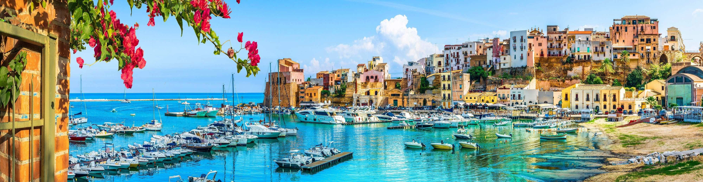

Caltanissetta


Trapani si protende nel Mediterraneo come una falce di luna, con il suo centro storico su una penisola circondata dal mare. Città di pescatori, salinari e navigatori, è il punto di partenza per le Isole Egadi e custodisce una storia intrecciata con quella di Fenici, Arabi e Normanni.
Piazza San Lorenzo è il cuore monumentale di Trapani, dominata dall'omonima Cattedrale barocca e dall'elegante Palazzo Cavarretta. È uno spazio scenografico circondato da edifici storici, punto di ritrovo della vita cittadina e punto di partenza per esplorare il centro storico.

Edificata nel Seicento, presenta una facciata barocca e un interno elegante e luminoso. Tra le sue navate sono custodite importanti opere d'arte, tra cui una celebre tela del pittore fiammingo Van Dyck.
Via Generale Domenico Giglio, 91100 Trapani TP
Attuale sede del Consiglio Comunale, si distingue per la sua spettacolare e ornata facciata barocca arricchita da un grande orologio astronomico. Costituisce la quinta scenografica perfetta di Piazza San Lorenzo.
Via Torrearsa, 91100 Trapani TP


Uno spazio interattivo e divertente situato nel centro storico. Attraverso installazioni ottiche, stanze prospettiche e giochi visivi, offre un'esperienza che sfida la percezione e le leggi della fisica.
Via Mercè, 2, 91100 Trapani TP
Una trattoria storica che è una vera e propria istituzione culinaria a Trapani. È il luogo per eccellenza dove gustare l'autentico couscous di pesce alla trapanese, preparato secondo le antiche ricette marinare.
Via Carmine, 17, 91100 Trapani TP


Un piccolo e storico locale celebre in tutta la città. Famosa per le sue freschissime granite accompagnate dalle brioche col tuppo, e per l'eccellente pasticceria a base di mandorla e ricotta.
Via delle Arti, 6/8, 91100 Trapani TP
Una suggestiva passeggiata pedonale che corre sopra le antiche mura difensive della città, a picco sul mare. Offre scorci romantici, soprattutto al tramonto, sulle isole Egadi e sulla costa.
Viale delle Sirene / Passeggiata delle Mura di Tramontana, 91100 Trapani TP